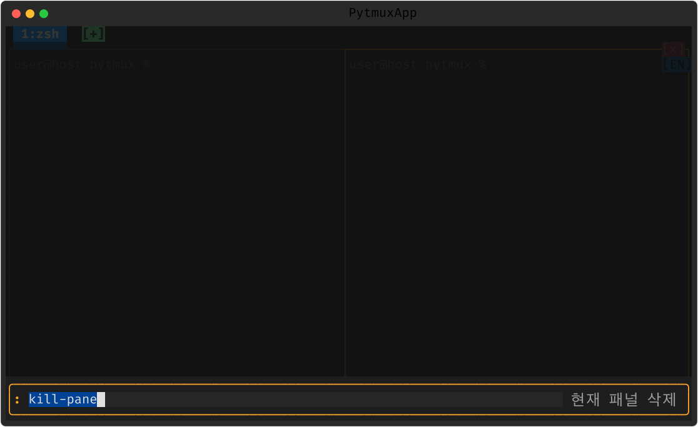

패널 다루기
한 윈도우를 여러 셸로 쪼개는 패널은 pytmux 의 심장입니다. 분할·이동·크기·줌·교환·삭제를 키·명령·마우스 어느 것으로도 할 수 있습니다.
분할과 이동
기본 prefix 는 Ctrl-b 입니다(설정으로 변경 가능).
| 동작 | 키 / 명령 / 마우스 |
|---|---|
| 좌우 분할 | prefix % · split-window -h |
| 상하 분할 | prefix " · split-window -v |
| 포커스 이동 | prefix ←↑↓→ · prefix o(다음) · 패널 클릭 |
| 크기 조절 | 경계선 마우스 드래그 · resize-pane |
| 줌 토글 | prefix z · resize-pane -Z |
| 교환(swap) | Shift+왼쪽 드래그 · swap-pane |
| 회전(rotate) | rotate-window |
| 삭제 | prefix x(확인) · 패널 [x] 클릭 |

┬┴├┤ 로 연결됩니다.활성 패널과 테두리
패널이 둘 이상이면 각 패널을 테두리로 감싸고, 활성 패널은 파란색, 비활성은 회색으로 표시합니다. 클릭하거나 prefix 방향키로 포커스를 옮기면 테두리 색이 따라옵니다. 네트워크 응답성이 떨어지면 테두리가 빨간색으로 바뀝니다(자세한 내용은 11. 재시작 · 회복).
줌 — 한 패널을 전체화면으로
prefix z 로 현재 패널을 잠깐 전체화면으로 키웠다가, 다시 누르면 원래 레이아웃으로 돌아옵니다. 좁은 패널에서 로그를 크게 볼 때 유용합니다. 줌 상태는 하단 상태표시줄에 표시됩니다.

교환 · 회전 · 레이아웃
swap-pane 으로 두 패널의 위치를 맞바꾸고(마우스로는 Shift+드래그),
rotate-window 로 패널들을 한 칸씩 돌립니다. 미리 정의된 레이아웃으로
고르게(even) 정렬하거나, 만든 배치를 저장/복원할 수 있습니다.
삭제와 확인
패널을 닫으려면 prefix x 또는 패널 모서리의 [x] 를 누릅니다.
실행 중인 프로그램이 있으면 실수로 지우지 않도록 확인 대화상자가 뜹니다. 마지막 패널을 닫으면
그 윈도우(탭)가 닫힙니다.
